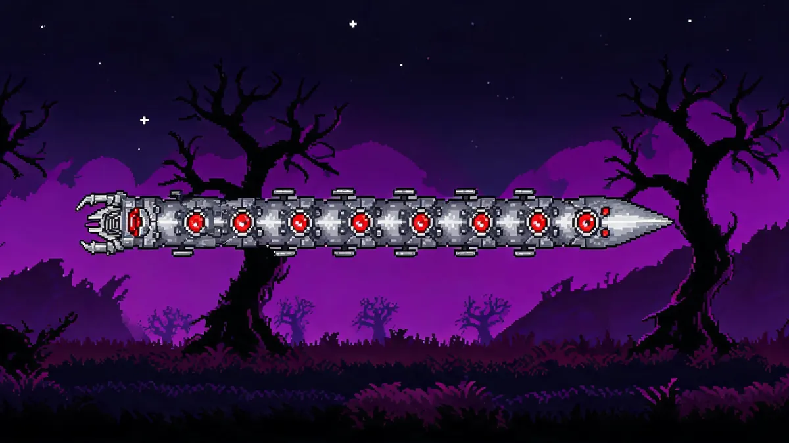

The Destroyer Guide —Mechanical Worm

| Property | Details |
|---|---|
| HP | 72,000 total (Normal) / 129,600 (Expert) |
| Head Damage | 60 (Normal) / 102 (Expert) |
| Defense | 0 (Head) / 26 (Body) / 36 (Tail) |
| KB Resistance | 100% |
| Spawn | Use a Mechanical Worm at night (crafted from 6 Iron Bars + 5 Souls of Night + 5 Souls of Light) |
Easiest Mechanical Boss
The Destroyer has the most HP of the three mechanical bosses, but it's widely considered the easiest. Why? Piercing weapons hit every segment. The Daedalus Stormbow + Holy Arrows combo can kill it in under 30 seconds.
Preparation
- Armor: Adamantite or Titanium. Frost Armor for the extra DPS.
- Weapons: Daedalus Stormbow with Holy Arrows is the top choice. Nimbus Rod (clouds that rain from above) works well alongside the bow. Crystal Storm or Golden Shower for mages.
- Accessories: Wings, Lightning Boots, Ranger Emblem, Star Veil (extra invincibility from the probes).
- Arena: A skybridge about 40 blocks above ground, or a platform arena. The higher the better —you want distance between you and the worm's body.
Strategy
The Destroyer is a giant mechanical worm with 80+ segments. It surfaces and dives through blocks, firing lasers from its head and deploying Probes (small flying drones) that shoot at you.
- Stay high. Build your arena 40+ blocks above ground. The Destroyer can't reach you as easily and you'll have clear shots at its body segments.
- Use piercing. Every arrow from the Daedalus Stormbow hits multiple segments. With Holy Arrows, the stars rain down and hit even more. This is where 90% of your damage comes from.
- Kill Probes quickly. Probes deal 40 damage each and swarm you. Take them out as they approach —a single hit usually kills them.
- Aim for the body, not the head. The head has 0 defense but is harder to hit consistently. The body segments have 26 defense but there are 80+ of them.
Don't Go Inside
Fighting The Destroyer inside a box or enclosed space is a bad idea. His head phases through blocks and the Probes will corner you. Always fight him in an open arena with vertical clearance.
Rewards —What's Worth Your Time
- Hallowed Bars (20-35) —Worth farming. Used for Hallowed Armor, Excalibur, and several endgame items. The Destroyer drops slightly more bars than the other mechanical bosses.
- Souls of Might (20-40) —Worth farming. Used for Megashark, Drax (pickaxe/axe tool), and the Flamethrower. Megashark alone is worth the farm —it's the best general-purpose ranged weapon in early Hardmode.
- Destroyer Trophy / Mask (Master) —Cosmetic.
Related Guides
- Daedalus Stormbow Guide —the best weapon for this fight
- The Twins Guide —another mechanical boss
- Boss Progression Order